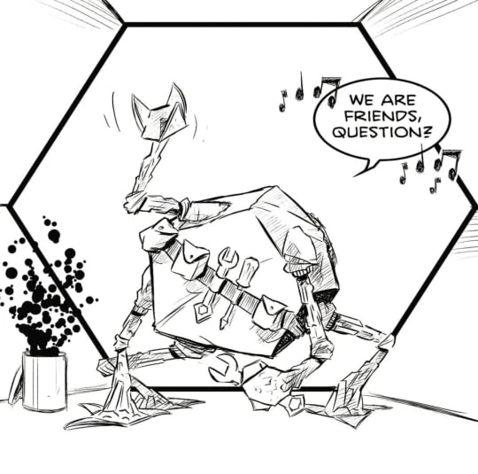

The Scientific Inaccuracies in Project Hail Mary by Andy Weir
Total View/Refresh Count:
I would like to start this off by saying, out of the 250+ books I have logged on Goodreads over these past few years,Project Hail Mary, by Andy Weir, is the one the most memorable one, and my absolute all time favourite. The only other possible contender to this position would be Weir's 2015 bestseller, The Martian. What makes this book so wonderfully captivating was all the exhilarating plot twists and genius strokes of engineering ideas. It is the perfect balance between curious imagination and realism; enough to make you feel as though you are being transported to another world, yet still firmly attatched to the one you were born in.
Similar to The Martian, though this fictional novel is one of the most scientifically accurate ones out there, it is not completely accurate. As a result, after I finished reading the book, I sat for a while and pondered about the little scientific inaccuracies one could occasionally find throughout the novel if they searched hard enough. Since there weren't many in the ~500 page book, it became a sort of fun little treasure hunt. Using the both my preexisting knowledge, and admittedly, the internet, I have gathered a list of the few most prominent ones.
To Note: I am ignoring the technological improbabilities/impossibilities since this is set in the near future. Who knows how far we could advance technologically in 10+ years from when this blog was first started (March 2023, for those curious souls). I, for one, have high hopes for future technology! Though I am also slightly terrified, but I suppose it is simply part of human nature to fear the uncertain.
But before I get a little too ahead of myself, below is a relatively “short” plot recap of Project Hail Mary, courtesy of The Bibliofile book reviews (written so eloquently I could not muster up the energy to write my own ... but I promise everything else is 100% written by me). Feel free to skip this summary if you are quite familiar with this book and do not need a refresher. ***If you have not read this book before, I advise you to proceed with caution as this is a summary of ALL the events in the novel.***
Short Summary
Ryland Grace is the sole survivor of a suicide mission to stop an alien organism that feeds on stars ("Astrophage"), which is causing the apocalyptic scenario of the sun dimming. His mission is to find out how to stop the Astrophage and send the data back via unmanned probes. He comes across an alien ("Rocky") from a planet ("Erid") that is faced with same problem with their star. The two learn communicate. Together, they find a solution, and Rocky has extra fuel so Ryland can go home. (As Ryland's memories return, he learns that he was sent here involuntarily and given a serum to wipe his memory.) But on the way home, they both run into trouble. Ryland sends Earth what it needs to stop the Astrophages, and he also decides to gives up his chance to go home in order to save Rocky and his alien species.
Detailed Summary (the interesting one)
The book opens with Ryland Grace waking up next to two dead bodies. He doesn't know where he is or why he's there. As Ryland investigates his surroundings and his memories slowly return, Ryland realizes he's in a spaceship named Hail Mary with his dead crewmates, sent to investigate something called the Petrova problem.
Scientist Irina Petrova had first observed an astronomical anomaly that later turned out to be a single-celled extraterrestrial life form. These dots appear to feed on the Sun, and their trail forms an arc between the Sun and Venus (which scientists refer to as a "Petrova Line"). This has potentially apocalyptic implications since it means the Sun is effectively dying. It's predicted that it will lead to a 10-15% decrease in the Sun's output. Hail Mary's mission is to figure out how to stop this.

Ryland eventually recalls his research into these particles ("Astrophages"). Ryland is a junior high science teacher who formerly worked in speculative extraterrestrial biology. Due to his prior academic research, he is brought on to the research team, run by Dr. Eva Stratt, who is given nearly unlimited authority worldwide.
It is discovered that Astrophage can store enormous amounts of energy as mass (E=mc2). They can then expel that energy as light, the force of which they use as momentum to move around. They get their energy from stars such as the Sun. Then, because they need carbon, they go searching for carbon dioxide (which Venus is largely comprised of), where they breed and then return to the Sun with their offspring. The data suggests that Astrophage have infected many stars and will affect any star within an 8 light-year radius.
In present day, Ryland finds that his spaceship is headed for Tau Ceti, a star located in a cluster of other Astrophage-infected stars, but unlike the others, it has not dimmed. Presumably, he there to find out why Tau Ceti has resisted infection. There, Ryland comes across an alien spaceship. The alien astronaut ("Rocky") is from a planet ("Erid") that is dealing with the same problem regarding their star, 40 Eridani. He is investigating Tau Ceti for the same reason.
Due to Erid's thick atmostphere blocking almost all light from reaching the ground, Eridians "see" using passive sonar instead of light, and their language consists of chords. Their atmosphere is also very hot and filled with ammonia, which is lethal in high amounts to humans.
Meanwhile, as Ryland's memories slowly return, he recalls how Astrophage proved to be a great fuel source because of its energy storage potential. However, given the extensive distance of the trip, there isn't time to breed enough Astrophage for fuel for a trip back so it's a suicide mission.
Stratt decides it's necessary to put the crew in extended medical comas for the four-year journey (to prevent depression or them killing each other) given that they will be confined in a small space, though only certain people have the resistances to survive the medical comas. (It's also still risky, which is why the other two crew members do not survive.) Still, Stratt manages to put together a primary and backup crew with the appropriate gene markers.
In present day, Ryland and Rocky learn each other's languages, and they agree to team up to figure out how to stop the Astrophage. Rocky is very talented at constructing and fixing things, which he does using an extremely strong material called xenonite. He also has the extra Astrophage fuel to allow Ryland to possibly return home. Meanwhile, Ryland teaches Rocky about things like radiation and time dilation, which the Eridians had not discovered yet.
They identify that Tau Ceti does have Astrophage and a Petrova Line that leads to a nearby planet, which they name Adrian. They get a sample of Astrophage from Adrian, and it indicates that the Astrophage has a predator which is why its population is being kept under control (and why Tau Ceti is not dimming). However, in order to sample it, they have to engage in a risky maneuver with the ship, the ends with Ryland and Rocky severely injured.
As Ryland's memories continue to resurface, he recalls how nine days before the launch, both the primary and backup scientist on the crew died in an explosion from some testing gone wrong. Instead, Ryland was asked to step in, since there wasn't time to train anyone else. Ryland had refused, but Stratt insisted. She sedates for the launch and administers a serum to induce temporary amnesia so he wouldn't remember that he was forced involuntarily to participate.
In present day, Ryland and Rocky isolate the predator ("Taumoeba"), but discover that nitrogen can kill it which means it can't survive on Venus and Threeword (the planets where Astrophages are breeding near the Sun and 40 Eridani, respectively).
Instead, they have to breed a strain of enhanced Taumoeba that is resistant to nitrogen. In the process, some Taumoeba get loose and rapidly consume Hail Mary's Astrophage fuel, but they manage to contain the situation and swap the fuel. Once the nitrogen-resistant Taumoeba is ready, Ryland and Rocky bid each other farewell as they go home to save their respective species.
However, on the way back, Ryland discovers that the enhanced Taumoeba has also acquired the trait of being able to hide in the xenonite material that their tanks were built with. While Ryland simply swaps out the tanks, Rocky's entire ship is built with xenonite. Ryland sends his unmanned probes off to Earth with the Taumoeba necessary to stop the Astrophages, and then he turns back to save Rocky (and the rest of the Eridian species) even though it means he won't be able to go home.
Years later, Ryland is living on Erid in a bubble since otherwise he would die. Rocky reports that their scientists have discovered that Earth's Sun is now at full luminance, indicating that Earth was saved in time and is now habitable.
Issue 1
The first issue is the puzzling nature of Taumeobas being able to pass through xenonite despite their relatively larger size when compared to nitrogen molecules. Nitrogen is incapable of permeating the porous material of xenonite despite its small size, lack of charge, and nonpolar nature, which, theoretically, should make it ideal for diffusing through materials. In contrast, Taumeobas are microorganisms that are larger than nitrogen molecules (likely on the scale of Eukaryotic creatures) and feed on astrophage, indicating that they are at least the same size or even larger than astrophage. Despite their larger size, Taumeobas can pass through xenonite, which is unexpected. Therefore, it is unclear what allows Taumeobas to permeate xenonite while nitrogen cannot. If nitrogen cannot diffuse through the material, Taumeobas should not be able to do so either. It's why N95 masks block viruses, which are likely much smaller than Taumeobas, but you can still breathe through them.
This could perhaps be addressed through the theory that Taumoebas have evolved to eat through, or otherwise carve holes in xenonite. As the Taumoeba carves through the xenonite, it deposits waste behind it, much like a worm, effectively blocking MOST of the nitrogen from filling it's chamber and killing it. Though this is implausible, since xenonite is made out to be an EXTREMELY strong material, it is more plausible than Taumeobas squeezing through spaces that nitrogen can not.
Issue 2
According to Wikipedia, on an “ideal” cloudless day around 75% of the sun's solar energy reaches the surface of the earth, with this number being reduced to around 40-50% on cloudy days. From this, you can estimate that if the atmosphere were n (italics) as dense, the fraction of sunlight reaching the ground should be (0.75)^(n-1). Throughout the story, Grace likes to point out that Erid's atmosphere is 29 times as dense as Earth's. This is because when the two bridges connected Rocky put 29 of his “air” and only 1 “air” for Earth into the models for Erid and Earth's respectfully. Since Hail Mary, the ship, was only pressurized to 1/5 of Earth's atmosphere, Erid's atmosphere would be around 29/5 as dense as Earth's, or roughly 6 times as dense. Using the equation from above, around 24% of the sunlight should reach the ground.
But of course, Erid is NOT Earth, so the distance to the star in the 40 Eridani star and the composition of the atmosphere are also extremely important variables in this equation. In the novel, it is mentioned that Erid is the first planet in the Eridani star system, so it is “extremely” close to it and the intensity of starlight should be relatively strong. Additionally, it is stated several times throughout the novel that the atmosphere of Erid, and therefore, Rocky's spaceship, is primarily made of Ammonia, which is less dense than air. As a result of these two variables (though there are certainly more that need to be taken into account), my calculation of 24% starlight penetration above would actually be an underestimation (bold). With this much 40 Eridani light reaching the floor, is it unlikely that sonar sense evolved in the Eridians is necessary, perhaps only an increased sensitivity to light.
BUT (bold), evolution is a wonderfully fascinating process. The eye is incredibly complex, and the Eridians likely evolved a sonar senses simply by chance. But it would be incorrect to state that sonar sense was developed because Erid is too dim, and sight would be useless.
To note: Rocky is simply fascinating. When he came to save Grace in Hail Mary's conditions he did not spontaneously explode, so he must be able to handle very high internal pressure differences. It is even more impressive when you pair this with the stark temperature differences.
Issue 3
Rocky develops a method of using his sonar sense to view human display screens by connecting a camera to a tactile display that uses roughness to represent color. However, this presents a significant issue because human displays utilize a different method of simulating color than the natural world. Human displays only use three phosphors (Red, Green, and Blue) that correspond to the three types of color-sensitive cells in our eyes, while any other color is produced by mixing different light.
As a result, a violet object, for example, which reflects light at a wavelength of about 400 nm in the real world, would be represented on a screen by a blend of light at 650 nm (red) and 450 nm (blue), resulting in the same appearance to human eyes. However, an alien sensor would perceive the two as distinct wavelengths, and Rocky's sensor would produce an image of the screen that would differ from what a person would see. To resolve this problem, it would be necessary to educate Rocky on the workings of the human eye and color theory and adjust his display to interpret pixel light as the intended color. Due to the severe time crunch to save both Earth and Erid, Grace likely didn't have the time to teach Rocky about all this “useless” knowledge.
Though it could be argued that it is possible that display screens would use the complete light spectrum, however, the likelihood of this happening is very low, as the Hail Mary was constructed using readily available components wherever feasible, and this novel takes place in the very near future. You would need new display technologies that encompass the entire light spectrum and is widely adopted as a standard screen. Given that people would hardly perceive any significant difference, it seems improbable that this would come to fruition. Why fix something that isn't broken? Especially when society is trying to save itself from freezing to death!